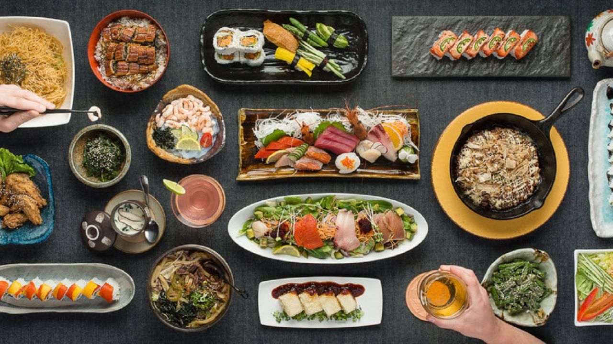

| Indian Cuisine | Japanese Cuisine | French Cuisine |
|---|---|---|
| Indian cuisine consists of a variety of regional and traditional cuisines native to the Indian subcontinent. Given the diversity in soil, climate, culture, ethnic groups, and occupations, these cuisines vary substantially and use locally available spices, herbs, vegetables, and fruits. Indian food is also heavily influenced by religion, in particular Hinduism, cultural choices and traditions. Centuries of Islamic rule, particularly by the Mughals, also introduced dishes like samosa and pilaf. | Historically influenced by Chinese cuisine, Japanese cuisine has opened up to influence from Western cuisines in the modern era. Dishes inspired by foreign food—in particular Chinese food—like ramen and gyōza, as well as foods like spaghetti, curry, and hamburgers have become adopted with variants for Japanese tastes and ingredients. Traditionally, the Japanese shunned meat due to Buddhism, but with the modernization of Japan in the 1880s, meat-based dishes such as tonkatsu and yakiniku have become common. Japanese cuisine, particularly sushi, has become popular throughout the world. | French cuisine developed throughout the centuries influenced by the many surrounding cultures of Spain, Italy, Switzerland, Germany and Belgium, in addition to its own food traditions on the long western coastlines of the Atlantic, the Channel and of course inland. In the 14th century, Guillaume Tirel, a court chef known as "Taillevent", wrote Le Viandier, one of the earliest recipe collections of medieval France. In the 17th century, chefs François Pierre La Varenne and Marie-Antoine Carême spearheaded movements that shifted French cooking away from its foreign influences and developed France's own indigenous style. Cheese and wine are a major part of the cuisine. They play different roles regionally and nationally, with many variations and appellation d'origine contrôlée (AOC) (regulated appellation) laws |

